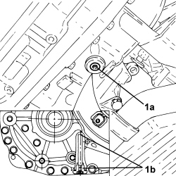

0010T45 AUTOMATIC TRANSMISSION FLUID CHECK LEVEL AND TOP UP IF NECESSARY
- Path
- Procedures > 00 MAINTENANCE > 0010 NEW VEHICLES AND MAINTENANCE > 0010T VEHICLE FLUIDS > 0010T45 AUTOMATIC TRANSMISSION FLUID CHECK LEVEL AND TOP UP IF NECESSARY
- Kind
- repair procedure (removal / refitting; the operation number is the code)
- Applies to
- engines: 2.2, 1.9 JTD 16v, 2.4 JTD 20v; all production periods; only with equipment: AUTOMATIC TRANSMISSION
- Interactive page
- https://sloeber94.github.io/elrnDB-fCrm/en/#/194002311
Applies to: engines: 2.2; all production periods
- Place the vehicle in a horizontal position.
- Place the gear selector lever from position P to D and then back to P again.
- Start up the engine and let it idle.
- Using the Examiner, check that temperature of the fluid is 70° - 80°C.
1. Undo the bolt (1a) and using the dipstick (1b) check that the level of the automatic transmission fluid is between the hot splinings.
- If necessary, top up the automatic transmission fluid level with the recommended fluid through the dipstick hole.

Applies to: engines: 2.2; all production periods
- Check that the fluid level is correct, then place the automatic transmission fluid dipstick back in its housing and secure it tightening the bolt to the recommended torque.
Component | Fastening | dia | Value (daNm) | Validity |
|---|---|---|---|---|
Automatic transmission fluid level dipstick | Bolt | - | (automatic gearbox side) 0.6 | 2.2 CAE |
Applies to: engines: 1.9 JTD 16v; all production periods
- Position the vehicle on a lift.
- With the engine coolant cold, start the engine and, with the brake pedal pressed, move the gear selector twice from position P to position D and viceversa keeping the selector in each position for 2 seconds.
- Let the gearbox oil temperature stabilize at between 35 and 45°C connecting the Examiner.
Op. 7055B54 UNDER ENGINE PROTECTION/GUARD - R.R.
1. Remove the automatic transmission fluid level control plug (1a) and check that the fluid comes out of the opening in the drain plug (1b).

Applies to: engines: 1.9 JTD 16v; all production periods
- If it does not come out, proceed as described below.
- Retighten the automatic transmission fluid level control plug.
1. Remove the engine coolant supply reservoir from the mounting bracket without disconnecting the pipes.

Applies to: engines: 1.9 JTD 16v; all production periods
1. Remove the automatic transmission fluid filler plug.
- Add 0.5 litres of recommended fluid through the filler opening.
Component | Type | Description | Classification | Qty. | Validity |
|---|---|---|---|---|---|
AUTOMATIC TRANSMISSION (6 speed) - for changing oil at Service Centre | Oil | TUTELA GI/VI | - | 3,320 kg | 1.9 JTD 16V CAE 2.4 JTD 20V CAE |

Applies to: engines: 1.9 JTD 16v; all production periods
- With the brake pedal pressed, move the gear selector twice from position P to position D and viceversa keeping the selector in each position for 2 seconds.
- Place the selector in P and operate the parking brake (it is advisable to use chocks to lock the wheels).
- Remove the automatic transmission fluid level control plug once again and check that the fluid comes out of the opening in the drain plug.
- If the fluid does not come out, repeat the above operations.
- Clean any traces of oil from the area of the drainage opening and tighten the automatic transmission fluid level control plug to the recommended torque.
Component | Fastening | dia | Value (daNm) | Validity |
|---|---|---|---|---|
Automatic transmission fluid level check plug | - | - | (automatic gearbox side) 0.6 - 0.8 | 1.9 JTD 16v CAE 2.4 JTD 20v CAE |
- Tighten the automatic transmission fluid filler plug to the recommended torque.
Component | Fastening | dia | Value (daNm) | Validity |
|---|---|---|---|---|
Automatic gearbox oil filler plug | - | - | (automatic transmission side) 2.4 ÷ 3.6 | 1.9 JTD 16v CAE 2.4 JTD 20v CAE |
- Place the engine coolant supply reservoir mounting bracket in its housing.
Applies to: engines: 2.4 JTD 20v; all production periods
- Position the vehicle on a lift.
- With the coolant cold, start the engine and move the speed selector twice from position "P" to position "D" and viceversa with the brake pedal depressed. Maintain the selector in each position for 2 seconds.
- Adjust the transmission fluid temperature between 80-85°C, connecting the Examiner, to allow the automatic transmission fluid cooling circuit thermostat valve to open, then stabilise at a temperature of 35-45°C.
Op. 7055B54 UNDER ENGINE PROTECTION/GUARD - R.R.
1. Remove the automatic transmission fluid level check plug (1a) and check that fluid emerges from the drain plug hole (1b).

Applies to: engines: 2.4 JTD 20v; all production periods
- If no fluid emerges, proceed as follows.
- Retighten the automatic transmission fluid level check plug.
1. Remove the engine cooling reservoir from the bracket without disconnecting the pipes.

Applies to: engines: 2.4 JTD 20v; all production periods
1. Remove the automatic transmission fluid filler plug.
- Add 0.5 litres of the specified fluid to the filler opening.
Component | Type | Description | Classification | Qty. | Validity |
|---|---|---|---|---|---|
AUTOMATIC TRANSMISSION (6 speed) - for changing oil at Service Centre | Oil | TUTELA GI/VI | - | 3,320 kg | 1.9 JTD 16V CAE 2.4 JTD 20V CAE |

Applies to: engines: 2.4 JTD 20v; all production periods
- With the brake pedal depressed, move the gear selector twice from position "P" to position "D" and viceversa, maintaining the selector in each position for 2 seconds.
- Set the selector to "P" and operate the parking brake (it is advisable to use chocks to lock the wheels).
- Remove the automatic transmission fluid level check plug and check that fluid emerges from the drain plug hole.
- If no fluid emerges, repeat the above operations.
- Clean oil traces from the drain hole area and tighten the automatic transmission fluid level check plug to the specified torque.
Component | Fastening | dia | Value (daNm) | Validity |
|---|---|---|---|---|
Automatic transmission fluid level check plug | - | - | (automatic gearbox side) 0.6 - 0.8 | 1.9 JTD 16v CAE 2.4 JTD 20v CAE |
- Tighten the automatic transmission fluid drain plug to the recommended torque.
Component | Fastening | dia | Value (daNm) | Validity |
|---|---|---|---|---|
Automatic gearbox oil filler plug | - | - | (automatic transmission side) 2.4 ÷ 3.6 | 1.9 JTD 16v CAE 2.4 JTD 20v CAE |
- Place the engine coolant resevoir back in its housing on the bracket.
Topics linked from this page (1)
Topics that link to this page (12)
- 0010K30 30,000KM SERVICE
- 0010K60 60,000KM SERVICE
- 0010K90 90,000KM SERVICE
- 0010M20 120,000KM SERVICE
- 0010M50 150,000KM SERVICE
- 0010M80 180,000KM SERVICE
- 0010T44 CHANGE AUTOMATIC TRANSMISSION FLUIDS
- 1004B14 POWER UNIT WITH AUTOMATIC TRANSMISSION R + R
- 1088B20 ENGINE COOLING RADIATOR - R + R
- 2130A27 DELIVERY AND RETURN DUPLEX PIPING OF AUTOMATIC GEARBOX OIL TO COOLING RADIATOR - R R
- 2130A22 COOLING RADIATOR OF AUTOMATIC TRANSMISSION HYDRAULIC CIRCUIT - R + R - INCLUDING FLUID LEVEL TOP UP IF NECESSARY
- 2130A36 <x>AUTOMATIC TRANSMISSION FLUID COOLING CIRCUIT THERMOSTAT VALVE - R&R</x>